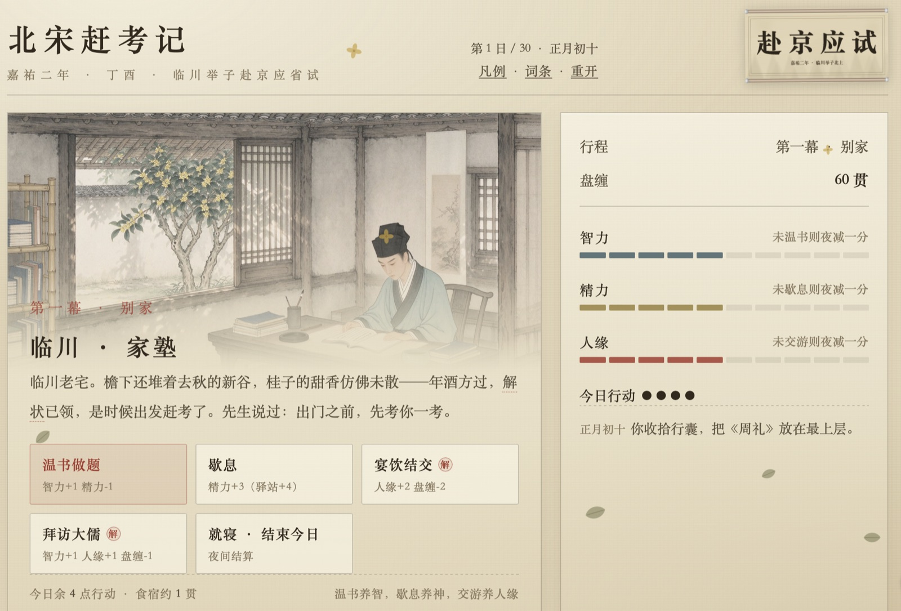

DHG508 · Week 8 · 历史模拟
临川举子的三十日汴京之行——单文件 HTML 科举模拟
在线玩：echozhangmin.github.io/songgame · 仓库：github.com/echozhangmin/songgame · 研究档案：projects/songgame/
正月初十，临川启程；三十日后，汴京省试、殿试。
十二幕：家塾→长亭→驿站→山道→汴河→虹桥→城门→酒楼→书库→号舍→放榜； 管理智力·精力·人缘·盘缠，每日 4 点行动。主角是临川（抚州）人——王安石同乡。

在线版：echozhangmin.github.io/songgame（手机可玩，进度存 localStorage）——课上可现场开一局。
电影让你看一个举子；模拟让你当一个举子。
正文小词皆可点开：「原文」（确有原文才加引号）／「所述」（只到书名篇名，如实降档）。
出处的等级就是诚实的等级：查到哪一级，就标到哪一级。
在场（每人一次，台词化用史料）：欧阳修 · 梅尧臣 · 司马光 · 苏洵 · 苏轼 · 苏辙 · 曾巩 · 曾布 · 程颢 · 张载 · 吕惠卿
有意的缺席：黄庭坚（12 岁）、米芾（6 岁）——这一科他们还在家乡读书。
为何 scripted 而非 agentic：台词可核查；守住"人物不能说出他不可能知道的历史"； 固定次序＝嘉祐二年的"可遇性"。agentic 升级列入 questions.md。
学术依托：Rong 2019（《Diogenes》，开放获取）——1057 主考、点检官与及第者交游研究。
| 证据层 | 证据 | 分级 |
|---|---|---|
| 考官在场 | 欧阳修知贡举、梅尧臣点检试卷；与韩绛同知贡举、锁院五十日——欧阳修《归田录》所述 | 所述级 |
| 考官生态 | 锁院唱和成集，声望反哺梅尧臣——Rong 2019（《Diogenes》，开放获取）所考 | 摘要级 |
| 试卷掌故 | 苏轼《刑赏忠厚之至论》即本年省试论题；"疑为曾巩作、置之第二"掌故原文待核 | 题实／掌故待核 |
| 谢启 | 苏轼及第后上考官谢启，映照"意气相投"（elective affinity）——Rong 2019 核心材料 | 摘要级 |
| 同榜名单 | 苏轼、苏辙、曾巩、曾布、程颢、张载、吕惠卿同年登第——诸人本传 | evidenced |
| 制度就位 | 糊名（992）／誊录（1015）／公卷已罢／御试三题"祖宗法"——《宋史·选举志一》原文（已核） | 原文级 |
换任何一年，凑不齐这四类纸——所以把主角放在这一年。
| 部分 | 分级 | 依据 |
|---|---|---|
| 时间骨架：秋取解→冬集礼部→春考试 | evidenced | 《宋史·选举志一》原文，逐字吻合 |
| 省试三场诗赋／论／策；殿试三题定等第 | evidenced | 同上原文："论第二场"；御试祖宗法三题 |
| 御街、州桥、新宋门、汴河；投状、特奏名 | evidenced | 《东京梦华录》《宋会要》《宋史·选举志》所述 |
| 临川→汴京路线与 30 日节奏；"打听偏好"只得传闻 | inferred | 漕路地理＋《清明上河图》虹桥；由糊名誊录推出；驿程未核（questions.md） |
| 主角其人；4 行动点／属性衰减／字数判诗／行卷考运 | invented | 可玩性抽象（行卷加成：公卷已罢，数值属游戏化） |
| "一甲／二甲"、号舍、程仪 | 借后世语 | 词条表自注今古差异 |
全表 19 行见 assignments/week-08/answer.md。
带着问题核《宋史·选举志一》原文——三处当日修复，两处意外坐实。
| 疑点 | 原文 | 处置 |
|---|---|---|
| 第二场"经义" | 专场经义系熙宁后之制；"诗赋为第一场，论第二场，策第三场" | 改"论"——玩家考的正是苏轼《刑赏忠厚之至论》那一场 |
| 特奏名结局 | 须"积其举数与年岁"，首举青年不与 | 结局页加自注，如实声明 |
| 行卷"考运加成" | 封弥誊录后"自是不复有公卷" | 词条补注；标 invented |
利好：殿试 3 题恰合御试"祖宗法"三题；时间骨架与原文逐字吻合。 疑问→原文→修复→推送（fb5e3de）：证据表是工作方式，不是附件。
| 谁 | 做了什么 |
|---|---|
| AI（开发） | 单文件构建、题库整合、词条两档出处、文案初稿、无头测试脚本 |
| AI（检索） | OpenAlex 12 组（$0.013）→ 20 条候选＋检索日志；落空查询如实记录；Google Scholar 人工查（不自动化） |
| 人 | 出题方向、数值与取舍拍板（README"已知取舍"）、实测游玩、读原文核校 |
验证不靠眼睛：`osascript` 无头跑 180 局 × 3 档答题率；题诗判定独立用例； 证据逐条分级，摘要级／题名级分开，不冒充读过全文。
诗的好坏只由字数决定——"四句、每句字数一样"即上品：
——拿上品、得程仪。真实规范是八韵律赋（许结 2003），机器判格律不可靠，于是退到一条 可验证的硬规则，对仗只作评语——"做到哪条边界"的诚实声明，是否收紧待拍板。
其他困难：术语今古错位（词条自曝）／赴京路线史料薄（转人工检索）／平衡待调参—— 未解问题俱在 questions.md，解决一条划掉一条。
玩：echozhangmin.github.io/songgame · 仓库：github.com/echozhangmin/songgame · 档案：projects/songgame/ · 答卷：assignments/week-08/answer.md · ⌘P 导出 PDF